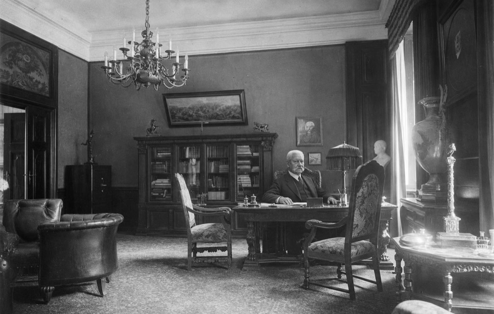

Gut Neudeck, Ostpreussen · 1. August 1934
Nichts ist verdächtiger als die sogenannte Realität.
Beim ersten Beitrag lädt der Browser das Sprachmodell (rund 2 GB).
Sie können sprechen oder schreiben.
Je nach Browser kann Ihre Aufnahme zur Erkennung an den Browseranbieter übertragen werden. Die Website selbst speichert weder Audio noch Gesprächsdaten. Sie können jederzeit tippen.